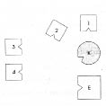
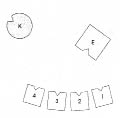
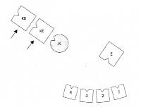
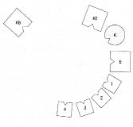
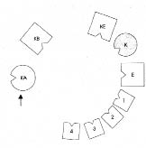

THEA İsmim Thea. Evliyim, hepsi evden ayrılan dört yetişkin oğlum var. Asıl mesleğim din pedagogu, sonradan aile terapisi eğitimi de aldım. Benim konum, zaman geçtikçe erkek kardeşimi daha da fazla düşünür olmak. Önce bunun o kadar da önemli olmadığını düşündüm ama şimdi görüyorum ki öyle.
HELLINGER Ne oldu ona?
THEA Yirmi üç yıl önce kendini öldürdü.
HELLINGER Kaç yaşındaydı?
THEA Yirmi dokuz.
HELLINGER Kendisini nasıl öldürdü?
THEA Asarak
HELLINGER Bunda bu kadar kötü olan nedir?
THEA Bu olayın hayat boyu peşimi bırakmadığının farkına varıyorum. Çocukluğumdan beri benim onun yaşamı pahasına yaşadığım duygusunu taşıyorum. Bugün de neden benim yaşadığımı onun ise ölmek zorunda kaldığını düşünüyorum.
HELLINGER Zorunda mıydı?
THEA Onun için durumun böyle olduğunu düşünüyorum.
HELLINGER Kendini öldürmesi için bir neden var mıydı?
THEA Bir neden vardı ama tek başına açıklama olamayacağını düşünüyorum.
HELLINGER Kabul edilen neden neydi?
THEA Terfi etmişti, bu arada asistanlık da yapıyordu. Başka bir asistan onun kuyusunu kazacağını söylemiş.
HELLINGER Neden bu olamaz.
THEA Hayır, ben de aynı şeyi söylüyorum. Birisi işimi bitirecek duygusuydu asıl neden, o da kendi işini bitirdi.
HELLINGER İntiharda kendini öldürenin yakınları bu olayı çoğu zaman bir aşağılama olarak yaşar ve birisi böyle bir karara vardığı için kendilerini aşağılanmış hissetmeye hakları varmış gibi davranırlar. O halde senin için çözüme götüren ilk cümle: “Kararına saygı duyuyorum ve sen benim kardeşim olarak kalıyorsun.”
THEA Bunu yaklaşık on yıl önce yaptım ama yine de huzur bulamadım. Hâlâ bir şeyler olduğunu fark ediyorum.
HELLINGER Bunu yapmadın yoksa huzur bulurdun.
THEA Kendi adıma “Yaşamın hakkında kendi kararını vermiş olmanı kabul ediyorum” diyebilecek kadar ilerlediğimi düşünüyorum.
HELLINGER Hayır, hayır, hayır. Senin söylediğin benim söylediğimden tamamen farklı. Kabul etmekte yukardan bakış, tenezzül vardır. “Saygı duyuyorum” dediğinde karşındaki büyüktür. Ya oğulların? Aralarından onu taklit eden var mı?
THEA İkincisi.
HELLINGER Çözülmediğinin işareti. İntihar girişiminde bulundu mu?
TEHA Hayır.
HELLINGER Bu konuda konuştu mu?
THEA Hayır.
HELLINGER Seni endişelendirecek ne yapıyor?
THEA Yok, öyle değil. Endişelenmiyorum. Ama dış görünüş olarak da idealleriyle de ona en çok benzeyeni.
HELLINGER Onu programlıyorsun.
THEA Hmm, korkarım öyle.
HELLINGER Onu sözüm ona gözlemlerinle programlıyorsun. Güvende olması için onu kime havale etmen gerekiyor?
THEA Babasına.
HELLINGER Doğru.
THEA Bunu hep istedim ama şimdiye kadar olmadı.
HELLINGER O zaman güncel aileni dizelim. Kimleri alıyor içine?
THEA Kocam, ben ve dört oğlumuzu.
HELLINGER Sen ya da kocan daha önce bir evlilik veya nişanlılık geçirdiniz mi?
THEA Hayır.
HELLINGER Eksik olan biri var mı?
THEA Annem bizimle yaşıyor. Ama nasıl bir rol oynadığını bilmiyorum.
HELLINGER Ne kadar zamandır sizinle yaşıyor?
THEA İkinci oğlumuz evden ayrıldığından beri, yaklaşık altı yıldır.
HELLINGER Baban öldü mü?
THEA Ben dört yaşında bile yokken savaşta öldü.
HELLINGER Annene bakmak zorundasın, bu çok açık.
THEA Evet, sorun da bu değil zaten.
HELLINGER Baban savaşta öldü, sen?..
THEA Dört yaşında vardım yoktum. Onu son gördüğümde üç yaşındaydım.
HELLINGER Nasıl öldü?
THEA Rusya’da, Stalingrad’da.
HELLINGER Bu, erkek kardeşinin intiharının nedeni. Kardeşin onu izledi. Öldüğünde baban kaç yaşındaydı?
THEA Otuz. Kardeşim de otuzuna basmak üzereydi. Otuzuncu doğum gününden birkaç gün önce.
HELLINGER İntiharının arkasında yatan bu.
THEA Anlamıyorum.
HELLINGER Böyledir işte. Çocuklar böyle yapar. Babanın ölümüne annen nasıl bir tepki verdi?
THEA Biz çocuklar karşısında da dile getirdiği intihar düşünceleriyle.
HELLINGER Bu daha da güçleniyor şimdi. Annen babanı sevmiş miydi?
THEA Evet.
HELLINGER Ben pek emin değilim.
THEA Sanıyorum sevmişti.
HELLINGER Emin değilim. Seven insan intihar düşünceleriyle tepki göstermez.
THEA Yani önce umutsuzluktu tepkisi. Sonra bize, “Savaşı kaybedersek” dedi -ama babam o sırada ölmüştü- “ırmağa atlar, bütün aileyi öldürürüz.” İntihar tehditlerinin doğrudan babamla mı ilgili olduğunu bilmiyorum.
HELLINGER Cinayet tehdidi bunlar.
THEA Cinayet tehdidi, evet.
HELLINGER Giderek tuhaflaşıyor. Pekâlâ, aileyi dizelim şimdi.
1. Resim

E Erkek, koca
K Kadın (=Thea)
1 İlk çocuk, erkek
2 İkinci çocuk, erkek
3 Üçüncü çocuk, erkek
4 Dördüncü çocuk, erkek
HELLINGER Koca nasıl?
KOCA Çok tuhaf. Kadın bana yakın değil, oğullar daha da uzak. Temas karım aracılığıyla oluyor ama böyle bir temasın olması gerektiğine dair bir işaret de yok. Karşımda duran oğullar da iletişim kuramayacağım kadar uzaklar.
HELLINGER En büyük oğul nasıl?
İLK ÇOCUK Kendimde değilim. Çok öfkeliyim. Annem buraya, babamla arama geldiğinde daha da güçlendi bu duygu. Ben buraya ait değilim ve kızgınım.
HELLINGER İkinci oğul nasıl?
İKİNCİ ÇOCUK Anneden uzaklaşmak istiyorum, her durumda şimdikinden daha uzakta olmak.
HELLINGER Üçüncü oğul nasıl?
ÜÇÜNCÜ ÇOCUK İlk duygu, burada olup bitenin bana tuhaf geldiğiydi. İki ağabey çok uzakta. Anne benden yana bakmıyor. Durumu kaldırabilmenin en iyi yolunun zihin açıklığımı koruyup bu garip duyguya kapılmamak olduğunu fark ettim. Küçük kardeşime döndüğümde, ona dikkat etmem, buradan çıkarmam gerektiğini düşündüm. Yani kendim hakkında zihnim açık ama onun için tasalanıyorum; arkadaki en büyük ağabey için değil, o sadece öfkeli.
HELLINGER Dördüncü oğul nasıl?
DÖRDÜNCÜ ÇOCUK Annenin karşısındayım gerçi ama bir temas olmadığını hissediyorum. Baba da benim için çok uzak. Kendimi biraz yalnız hissediyorum. En yakın temasta olduğum, kardeşim. Böyle kendimi iyi hissetmiyorum.
HELLINGER Kadın nasıl?
KADIN Erkeklere bakamıyorum. Kollarım yok, öyle ağırlar ki, başımı kaldırıp bakamıyorum. Sürekli yere bakmak zorundayım sadece.
Hellinger resmi, kadının dışarıya doğru bakacağı, oğulların da yaş sırasına göre babanın karşısında duracağı şekilde değiştirir.
2. Resim

HELLINGER Kocada nasıl böyle?
KOCA Kadını özlemiyorum aslında. Oğulların bir dizi halinde durması beni sevindiriyor.
HELLINGER En büyük oğulda nasıl?
İLK ÇOCUK Burada benim için her şey yolunda. Anneyi özlemiyorum.
HELLINGER İkinci oğul nasıl?
İKİNCİ ÇOCUK İyi. Ben anneyle temas halinde olmak isterdim ama bunun dışında her şey yolunda benim için.
ÜÇÜNCÜ ÇOCUK En küçük kardeşim için artık tasalanmıyorum.
HELLINGER En küçük nasıl?
DÖRDÜNCÜ ÇOCUK Burada, daire içinde kendimi çok daha iyi hissediyorum. Buradan benim için büyük bir güç yayılıyor ve kendimi güvende hissediyorum. Annenin burada olmayışı üzücü yalnız.
HELLINGER Kadın nasıl?
KADIN Daha iyiyim. Benim için böyle tamam.
HELLINGER Thea’ya Ulaştığımız iyi bir çözüm değil elbette ama durum bu. Şimdi dizime babanı ve erkek kardeşini ekleyeceğim.
3. Resim

KB Kadının babası, savaşta ölmüş
KE Kadının erkek kardeşi, kendini öldürmüş
HELLINGER Kadın için böyle nasıl?
KADIN Böyle baba ve erkek kardeşin arkasında olmak iyi benim için.
HELLINGER Bu, sadakat. Babası ve erkek kardeşini izliyor. Sadakat söz konusu olduğunda kişinin kendi yaşamı hiçbir rol oynamaz.
HELLINGER Koca böyle nasıl?
KOCA Tamam böyle.
HELLINGER Ya kadının erkek kardeşi?
KADININ ERKEK KARDEŞİ Ben de öyle hissediyorum.
HELLINGER Gruba Şimdi daha yumuşak bir çözüm deneyeceğim. Daha yumuşak bir çözümü dikkate almadan önce en uç çözümü göz önünde bulundurmak zorundayız. Ama çoğu zaman daha yumuşak bir çözüm gerçekleşmeyecek bir arzudan ibaret kalır, sonunda kendini hakim kılıp etkiyense bu en uç çözüm olur.
4. Resim

HELLINGER Koca böyle nasıl?
KOCA Oğulların artık yanımda olmayışı üzücü.
HELLINGER Kadın nasıl?
KADIN Ben köken aileme bağlıyım. Bir parça kocama yaslanmak istiyorum ama bakmak ve görmek istemiyorum.
HELLINGER Thea’ya Şimdi bir de annene ihtiyacımız var.
Hellinger kadının annesini sırtı aileye dönük duracak şekilde dizime ekler.
5. Resim

HELLINGER Orada, durduğu yerde kadının annesi nasıl?
KADININ ANNESİ Fena değil.
HELLINGER Kadında ne değişti?
KADIN Onun burada olması iyi. Artık halkaya biraz bakabiliyorum.
HELLINGER Gruba Gitmesi gereken annesi. Aidiyet hakkını kaybetti.
Babaya Kadının babası nasıl?
KADININ BABASI Karım da burada olduğundan beri her şey tamamlandı.
HELLINGER Thea’ya Artık kendi yerine geç.
THEA Dizimdeki yerini aldığında Oğullarla iyiyim. Ya burada kocaya?
HELLINGER Ona daha dostça bakabilirsin.
KOCA Benimle her tür dirsek temasından kaçındı.
HELLINGER Önce duruma alışması gerek.
Bir zamanlar bir Eskimo varmış. Yaz tatiline Karayipler’e gitmiş. On dört gün sonra da oraya alışmış.
THEA Kafamı kurcalayan bir şey daha var; kocam ve erkek kardeşim arasında duruşum.
HELLINGER Kocana biraz daha yaklaş, dirsek temasında olacağın kadar.
KOCA Hâlâ üç santimetre var.
HELLINGER Gruba Kocasıyla mutlu olması çok ağır bir suç olurdu; çünkü o zaman annesinden ayrılmış ve ondan daha mutlu olma densizliğini işlemiş olacaktı. Böyle bir mutluluğun ne kadar cesaret gerektirdiğini görüyorsunuz.